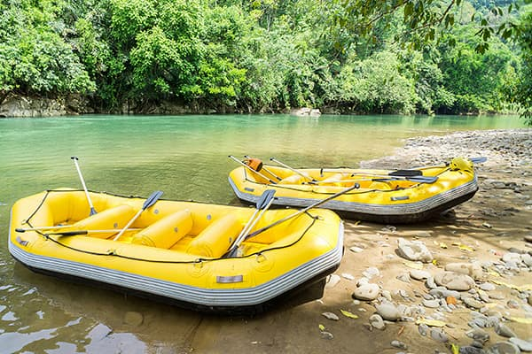

At Down the River our goals are adventure, thrill, and safety. Just the thought of being on the river, in a raft, with friends and family, and of course, one of our amazing guides, is the start of the adventure. The thrill comes from hitting those waves over the rocks that make us fly high and land hard. We ensure safetly by having each guest wear a helmet and lifevese and we always have a guide on every raft. Come raft with us and have fun floating Down the River!
Down the River: White Water Rafting
History
Down the River: White River Rafting Company was founded in 1898 by George Down. While growing up, Down lived by a river and often, as a young boy, his he and his friends would play in it. as teenagers, they had an idea to figure out how to float and stay floating as they went down the river.It worked and after hitting some major rapids, they crashed so many times, they had to figure out a better floating device.
Floating down the river one day, Down saw what looked like a very durable, big plastic boat. They were so excited! They asked these friends where they got it. After purchasing one of there own, they went on many, many adventures. After some time and growing up, Down decided to start his own White River Rafting Company. Welcome to Down the River. Let's have an adventure!
Adventure Awaits You